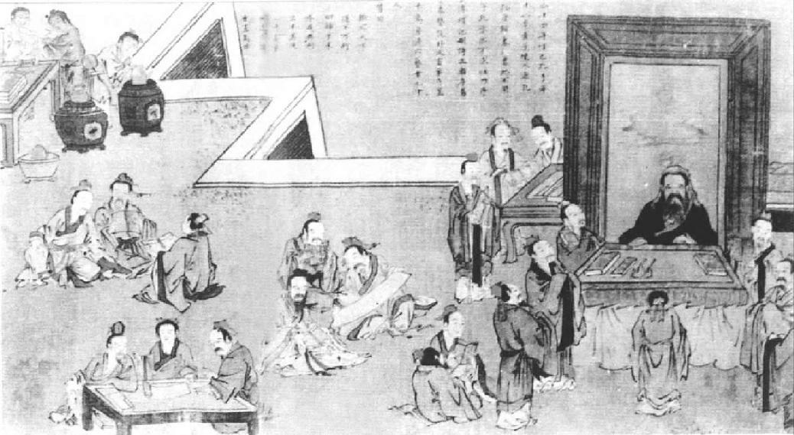

第二十一章 谦退之道
有登龙之术，也有谦退之道，而苏东坡不愧为谦退大师。现在苏东坡的情况是，不追求政治，而为政治所追求，颇为有趣。当年王安石得势之时，他在政坛坎坷不达，不足诧异；可是如今他的同党既然当政，他仍然失败，则确属可惊了。苏东坡永远不够为一个好党人，因为他过于孤高，非常人可及。现在他的同党当政，他自己有声望，受人爱戴，有太皇太后佩服他的学问人品，可是他却一直想摆脱一个颇为人羡慕觊觎的政治地位，却没有立即如愿。但是了解他气质的人，都知道他的宦海生涯不会太久的。延缓年老展长青春的第一条规矩，是避免一切情绪上的烦扰，可是苏东坡现在，在他所谓“奸小之境”的官场，却有过多的情绪上的烦扰。政治这台戏对有此爱好的人，是很好玩；对那些不爱统治别人的人，丧失人性尊严而取得那份威权与虚荣，认为并不值得。苏东坡的心始终没放在政治游戏上。他本身缺乏得最惨的，便是无决心上进以求取宰相之位，倘若他有意，他会轻而易举弄到手的。作为皇帝的翰林学士——其实是属于太皇太后——他与皇家过从甚密，只要肯玩政治把戏，毫无问题，他有足够的聪明，但是倘若如此，他就是自己斫丧天性了。
宋朝的政治制度最容易酿成朋党之争，因为大权集于皇帝一人之手，甚至在神宗元丰元年（一〇七八年），政府制度改组简化以后，仍然是宰相没有专责。内阁共同负责也没清楚划分的原则，以使宰相及阁员大臣能协力一致。我以前指出过，在当政者及反对者之间，也没有职权的严格划分。朝廷由多数党统治的办法，根本不存在。所以政治上的活动只不过是私人之间的斗争，这一点较西方尤有过之。但是政治的规范，则东西毫无二致。所以这种制度是使庸才得势的最好制度。这种政争之中也有些规则，不过主要在幕后进行时遵守而已。第一条是，一个高明的政客必然要精通一条艺术手法，那就是要多说话，但内容必须空洞。高明的官员永远不说出什么，但只要否认。高明的官员必须深有修养，长于说“无可奉告”“阁下所说，诚然不错！”这样便大有前途了。第二条，他必须讨好朋友。第三条是，当特别提防开罪于人。守口如瓶，低声而斯文，使人高兴地窃窃私语，全心全意讨好于人，此等官员纵然不能爬到宰相之位，至少不会投置闲散。他到死都有官做。不幸，苏东坡非此等人也。在随后数年，他把这些成功秘诀都一一违反了。朝云产下一个男婴之时，他写的诗里有下列的愿望：
惟愿孩儿愚且鲁，无灾无难到公卿。
但是此婴儿可怜夭折，无法达成父亲的愿望。我们必定要问，一个诗人画家是否能做一个成功的官吏？可想而知的是，在国家太平时则可。但是太平一词也是比较而论，而且在政治上从来没有十年之内没有激烈之争的。一个诗人画家以其达观的态度，很不容易卷入政争，甘心玩此把戏，而甘心接受处罚的恶果的。往往是，小试数次之后，对自己也会染指于此等勾当，不由窃笑，就此罢手。
可是，事情偏有凑巧，苏东坡若是躲避政治，政治偏要找他。他和司马光曾经政见不合，这是各有看法的人，共事时之所难免。但是他到京都半年之后，司马光去世，只剩下他孤零零一人身居高位，特别惹人忌妒。果然不久，第一个风暴就向他袭来，朝廷的政争都围绕他而发生。次年正月，几十份表章都弹劾他。司马光死后，政治派系逐渐形成——朔党、以理学家为首的洛党、以苏东坡为魁的蜀党。由于当时文字记载，并由于苏东坡之坚持脱离政坛，苏东坡不知道“蜀党”一词何所谓，当属可信。可是却有许多事故发生，使苏东坡的政敌受到刺激，不得不对他做殊死战。这次战斗，说公平话，实在是由苏东坡的弟弟子由所引起。苏子由在此一批新人当政之始，自外地来京为右司谏，他心想有责任刷新朝政，清除所有那些骑墙派以及与王安石有过从的残余政客。他使恶迹昭彰的吕惠卿遭贬谪出京，总算成功，蔡确、蔡京、章惇也暂时降职，但是这几个降职的官僚后来却力谋再起。子由也用七道奏章之多弹劾了朔党的一个领导人物，直到此人遭到罢黜。他曾把朔党都以“饭袋”称之。
两派之争在进行中。龃龉卑劣的政客之争对谁也乏味，因为不像对王安石变法的争论，而今这种纷争连政策原则的问题都没有。苏东坡曾经反对恢复征兵制，不过这并不是党人所力争的问题，党人则是借故生非。苏东坡为主考官时，出的考题是：“今朝廷欲思仁祖之忠厚，而患百官有司不举其职，或至于偷；欲法神考之励精，而恐监司守令不识其意，流入于刻。”其实汉文帝为政尚宽，并未引起百事废弛；宣帝尚严，也未失之过于苛酷。考生必须申论中庸之道。当时那群小政客则反对这个考题，屡次上表给太皇太后，请求审问苏东坡。他们控告苏东坡对仁宗、神宗犯大不敬之罪。
也是和往常一样，每逢太皇太后把这些奏章置之高阁，群小便继续弹奏。由哲宗元祐元年十二月到次年正月十一日，有四五份表章弹劾苏东坡。正月十二日，太皇太后敕令停止弹劾。正月十三日，百官在中书省接到圣旨。那些官员竟而违抗圣旨，次日又上一表。苏东坡这段期间并不屑答辩，只是上了四次表章，请求派任外地官缺，离开京都。到十六日，太皇太后显然是要支持苏东坡，因为她对众臣说，苏东坡的意思是指国家官员的宽严，他并没有对皇帝本身有何不敬，甚至弹劾苏东坡的官员有受惩处之说。
这时，苏东坡决定不求外放，而是要挺身而斗了。他在正月十七日，给太皇太后上了两千字长的一份表章，略叙他本人的职分并对卑劣的政治手法予以谴责。他是为“人应当有不同意权”而奋战。在表章里他指出朝廷官员都表示同一意见，或因怕开罪于人而避免表示意见，皆非国家之福。君臣当表白自己的意见，如此于人于事，方有助益。倘若帝王所赞同的群臣都说对，群臣便都成了孔子所说的乡愿，是足以招致亡国之祸的，然后他又略述在免役法方面他和司马光不同的看法。他二人是意见不同，但是尊重彼此的意见。而今司马光已去世，那群人以为朝廷依旧继续推行他既定的政策，于是只知道顺从皇帝的意见。实际上，司马光并不希望人人都同意他的意见，他也不相信太皇太后所需要的只是群臣唯唯诺诺的恭顺和卑屈谄媚的意见一致而已。他另一点异议是，从免役法所征收的三千万贯之中，拨出了西北战事所需之后，尚余半数，朝廷应当把此款项在城郊购买土地，用以安顿退役的军人，如此，可以减少服役人数的一半。此钱取之于民，当复用之于民。在这些方面，他一直坚持己见，得罪了不少人。大概在十二日，他写信给好友杨珪，在信中又非难那些人云亦云毫无主见的人，并颇以自己有真知灼见而自负。那封信上说：
某近数章请郡，未允。数日来杜门待命，期于必得耳。公必闻其略。盖为台谏所不容也。昔之君子，唯荆（王荆公）是师；今之君子，唯温（司马温公）是随。所随不同，其为随一也。老弟与温相知至深，始终无间，然多不随耳。致此烦言，盖始于此。然进退得丧，齐之久矣，皆不足道。
最后，在二十三日，苏东坡奉令留任原职，在二十七日，朝廷决定把请求审问苏东坡的官员予以宽恕。
苏东坡为小人陷害，太皇太后支持他，政敌显然未能达成目的，也因此丢了脸面。他别无话说，只好照旧留任。他对太皇太后非常感激，决定从此之后，毅然决然以更为坦诚的态度，向太皇太后说别人所不敢说的话。今天在《苏文忠公全集》里还有很多政论文章和奏议，都是此后的两年内写的。那些奏议上都清清楚楚写着日期，看了就知道他所争持的是哪些问题。
他所力争的第一项是“广开言路”。他若生在今天，一定会为言论自由而战，为强大有益的舆论而战。这是他再三再四提到的。他指出来，朝廷有道，皇帝一定是想办法接近每一个人。比如说，唐太宗在位时（唐太宗可以说是中国四千年来最好的皇帝），他许每一个人到宫廷进言，甚至无官无职的老百姓也在内。若有人说有话要见皇帝，宫门的守卫人员不许阻拦。苏东坡提醒太皇太后，在本朝初年皇帝允许低级官吏谒见，甚至平民亦蒙接待。而今可得见到太皇太后的只不过十几个人，那十数人岂能尽知天下所发生的事？倘若那十数人赶巧都是庸碌之辈，或不敢把真实情形奏闻，太皇太后必致相信天下百姓安乐无事。天下情形岂不糟糕！诚然，别的官员也可以上表进言，但是那些表章进了皇宫，也就石沉大海了。太皇太后若不亲自召见，又怎么了解所讨论的问题？再者，还有好多事是不能写在纸上见于文字的。有的事情有时万分复杂，一次讨论未必弄得清楚，何况只凭一道表章！在另一道奏章里他说，马生病，不能以言语表达，“人虽能言，上下隔绝，不能自诉，无异于马”。
但是文人若不能独立思考，无批评的勇气，言论自由也终归无用。就在这一点上，他赞美欧阳修而非难王安石，因为欧阳修激扬清议，王安石则压制清议。苏东坡极其担心当时的暮气沉沉，读书人已经忘记用头脑思索。这段时期，在他给门人张耒的一封信里，他说：“文字之衰，未有如今日者也，其源实出于王氏。王氏之文，未必不善也，而患在于好使人同己。自孔子不能使人同，颜渊之仁、子路之勇，不能以相移。而王氏欲以其学同天下。地之美者，同于生物，不同于所生。唯荒瘠斥卤之地，弥望皆黄茅白苇，此则王氏之同也。”
在哲宗元祐元年（一〇八六年），苏东坡总算把青苗法完全废止。年初，四月里，皇帝下了一道圣旨，对于这种政治措施勉强改革了一些，常平仓稳定粮价办法予以恢复，而青苗贷款仍然贷与人民，只是款额则以仓谷价值的半数为限。朝廷的如此改革，原出好意。这样，禁止了官吏像以前那样进入农村，召集开会，把官款分配给农民，也禁止小吏按家去催逼捐献。在苏东坡看来，此种不彻底的措施，还难令人满意，其流弊也不减于过去。在八月初四，他又给皇帝上表，第一请求将青苗法完全废止，第二请求将赤贫百姓之欠债，包括本金利息在内，一律宽免。他又将四月份之改革措施比作偷鸡贼，此贼自称将改过向善，以后每月只限于偷鸡一只，这是引用《孟子》上的典故。他的表文里说：“臣伏见熙宁以来，行青苗、免役二法，至今二十馀年，法日益弊，民日益贫，刑日益烦，盗日益炽，……又官吏无状，于给散之际，必令酒务设鼓乐倡优，或关扑卖酒牌子，农民至有徒手而归者。但每散青苗，即酒课暴增，此臣所亲见而为流涕者也。二十年间，因欠青苗至卖田宅、雇妻女、投水自缢者，不可胜数。”苏东坡问，为什么皇帝竟会降尊纡贵借钱与百姓而求利息呢？他建议朝廷下令所有欠官债者分十期归还，以半年为一期，甚至盼望皇帝念及债务人已付过不少利息，慈悲为怀，凡四等以下贫民的债务，全予豁免。下个月，青苗法才全予废除，但赤贫者之债务宽免之议，直到六年后，经苏东坡力请，朝廷方予接受。
苏东坡又单枪匹马，只身向朝廷之腐败无能进军。他想从根本上改革国家的吏治。朝廷官吏皆来自科举，但是科举制度业已废弛。他有三四次身为主考官，都特别留心为国家选拔真才，有时把别的考官所弃而不取的考卷又找回重阅录取。有一次，考生在御林军例行监视之下进行考试，御林军的傲慢粗野，真使他吃惊。军士对考生呼喊，如对一群新兵。有几个考生被发现挟带作弊而驱出大殿，警卫军士大声喊叫，声势逼人。当时混乱不堪，军士之恢复秩序，犹如平定暴乱。军士的蛮横无礼，是对士子斯文的侮辱。苏东坡立刻连上二表，将两个军士斥退。
当时最使朝廷感到困扰的，其实在中国历史上历代皆然，就是冗吏充斥。读书人太多，而朝廷可给的官位太少。这是中国多年的积弊，人尽认为一个优秀的读书人必然要“学而优则仕”。这个想法如果现在还不改，全国教育普及则国家将亡。我们有多少官位供给四万万五千万人呢？倘若考试制度认真执行，而选人唯才，则合格的考生必然为数有限，而选取的人才的素质也会提高。但是在苏东坡时代，引用亲族之风已经盛行。有好多外省来京的考生，由朋友亲戚的推荐，不用在京参加考试，便可以获得官职。每次考试若选三四百人，总有八九百人不经过考试的。礼部就可以推荐免试生二三百人，其他还有由兵部和皇家关系推荐的。在春季祭天大典之时，很多读书人由皇上特恩免考，苏东坡说：“一官之阙，率四五人守之，争夺纷纭，廉耻道尽。中材小官，阙远食贫，到官之后，求取渔利，靡所不为，而民病矣。”他又说：“臣等伏见恩榜得官之人，布在州县，例皆垂老，别无进望，唯务黩货以为归计。贪冒不职，十人而九。朝廷所放恩榜几千人矣，何曾见一人能自奋励，有闻于时？而残民败官者，不可胜数。……所至州县，举罹其害。乃即位之初，有此过举，谓之恩泽，非臣所识也。”苏东坡提议废除此等免试办法，严格限制高官巨卿之子女亲戚，以及皇家所推荐之人。苏东坡认为自己有责任把官吏之怠惰低能蒙混朝廷的情形，奏知太皇太后。为这种情形，他向太皇太后密奏多次。在几件大事的表章后，他又附有再启，请太皇太后阅后自己保存，勿转交与中书省。
比如说，西北番族入寇，几乎有中国农民一万人惨遭屠杀，当地驻军官长企图隐瞒朝廷，甚至消息传至京师之时，朝廷派一专使前往当地调查，此一专使本着中国由来已久的“官官相护”的积习，向朝廷报告只有十余个农民被杀。而特使更把灾情大事化小，先为当地驻军首长请求赦罪，然后再缓缓进行调查。两年之后，竟而毫无动静。被杀的村民朝廷应予抚恤，结果也一无所得。在苏东坡上太皇太后表中，他指出如此忽视民情，势难收揽民心。
“官官相护”之恶习必终致“官民对立”。另外，还有广东守将童政的案件。童政剿平盗匪无功，竟而在收复的城市里屠杀数千百姓。但是别的同僚对朝廷的报告中竟说他保卫城池有功，把他说成平贼的英雄。还有温杲杀害百姓十九人，仅仅记一小过，便算了事。另外有一个小军官，打算报称杀贼立功，竟闯入民家，在青天白日之下杀害妇女五六人，带着砍下的人头回去，说是斩杀贼匪的人头。这件事实在惨无人道，遮掩不了，在朝廷派人调查时，那个军官辩称，在交战之时，他不能看清是男是女，因而误杀。这些都是当时的虐政。苏东坡对这些事实在不能默尔而息。
最重要的案子，惹得众怨沸腾的，就是周穜一案。对这件案子，苏东坡实在无法克制自己了。王安石的余党暂时失势，现在都在偏远的外地为官，竟想卷土重来。那些魁首，如吕惠卿、李定、蔡确等人已遭罢黜，但是他们的好多朋友还都在京为官。为了试探朝廷对他们的态度，他们找了一个默默无名的州学教授周穜试上一表，表中提请将王安石的灵牌安置在太庙中神宗皇帝的神牌之下，好能共享祭祀。如果太皇太后准其所请，那些阴谋小人就可以看作是个分明的信号，他们又可以出来公开活动了。苏东坡看出他们如此试探的企图，立即对这些唯功名利禄是求的投机分子大施挞伐。他举出他们十六个人的名字，责骂他们是“虮虱”“蛆蝇”“邪佞小人”“国之巨蠹”。这一次他对王安石不再婉转其词，而几乎公然以诈伪骗子称之。他向太皇太后说，如果富弼、韩琦、司马光有一人尚在，这些鼠辈绝不敢露面。他说，如果对这些阴谋小人不予以当头棒喝，则“惠卿、蔡确之流何忧不用！青苗、市易等法何忧不复哉！”据他自己观察，他深信此种情形必会出现。实际上，他已萌去朝之志，他说君子如麟凤，难求而不易留养；小人则“易进如蛆蝇，腥膻所聚，瞬息千万”。其理至明，人若不愿与蝇蛆为伍，只有远避。
在两年之中，苏东坡以其强烈的名士本色、坦直无畏的言论得罪了很多人，其中包括朔党、洛党的人物。当然他也成了王安石余党的眼中钉、肉中刺！苏东坡不去，此等人不能再起。
看一看那些弹劾表章，倒也有趣。大概最为有趣的是苏东坡起草任用吕大防的圣旨。吕大防为王安石的政敌，此次也是受命担任要职。圣旨上赞美吕大防勇于任事，屹立不移，又说在王安石时百姓饱受压迫，人心消沉，王即去位，“民亦劳止，愿闻休息之期”。这句话是引自《诗经》，人人可用，但系讽刺暴君之作。御史看到，眼睛亮起来，说苏东坡将神宗比周厉王，意在毁谤。御史们气得股战心摧，他们忠爱的先王竟为人所毁谤！关于苏东坡的诗，还有一件有趣的事。那是在他自南回京之时，听说朝廷已经允许他定居在常州，正在心情愉快之时。他经过扬州，在一个寺庙的墙壁上写了三首诗。三首诗若一起看，主题为何，不会误解。其大意是他在寻找安居之地徒然无功之后，欣闻得以退休林泉以度晚年。其中第三首是：
此生已觉都无事，今岁仍逢大有年。 山寺归来闻好语，野花啼鸟亦欣然。
赶巧这首诗正写在五月一日，而神宗是驾崩于三月五日，五十六天以前。由诗上看，诗人在歌颂自己的欢乐，但这是在国丧之间啊！他为什么高兴？“闻好语”，什么好语？显然不是什么别的事，显然是神宗驾崩的消息！多么忘恩负义的臣子！这大概是这个时期弹劾苏东坡最严重的理由，当然是很严重的控告。我想从文意上看，“好语”即是指那年丰收有望。但是苏子由为他兄长想出一个更好的辩护语。在哲宗元祐六年（一〇九一年），子由为此事做证时，他说苏东坡那年三月在南京，那时一定已经听到神宗驾崩的消息，绝不会五十六天之后才在扬州听见。他告诉太皇太后说，“好语”指的是苏东坡下山时，听到农人谈到英明的幼主登基，十分欢喜。这个说法明确有力。子由做证完毕，从御前退出，让别的官员去争论到底吧。
苏东坡觉得太皇太后所收到弹劾他的本章，一定比他知道的还要多，而太皇太后始终是搁起来不理。他曾请求将那些本章公开，以便给他机会申辩澄清，但是太皇太后不答应。苏东坡知道他的政敌是决心要推倒他，甚至他草拟惩处奸佞小人吕惠卿的圣旨时，他的政敌都认为文字里含有毁谤先王的话。他真是厌倦于驱赶那些苍蝇臭虫了。不但是苏东坡自己，连他的朋友秦观、黄庭坚、王巩、孙觉都成了被批评的目标，或直接受到弹劾，或遭到政敌以阴险卑鄙的方式玷辱污蔑。这种用阴险的谣言中伤，使人没有自卫的余地。苏东坡自己觉得仿佛正走在群蛇滋生的阴潮的山谷，他决心要逃出去。
在哲宗元祐元年（一〇八六年）十二月，敌人第一次向他发动攻击时，他就想辞职，在次年，他不断请求摆脱官位。他写的信里有两封包括他的自传资料，历叙他的官场经历，还有他因倔强、任性而遭遇的很多烦恼、麻烦。在元祐三年十月十七日他的一道表章里，他说：“‘君不密则失臣，臣不密则失身。’以此知事君之义，虽以报国为先，而报国之道，当以安身为本。”两年之内，他“四遭口语”，由他推荐为官之人，亦遭受无故的污蔑。他提醒太皇太后，在前一派人当政时，他曾遭受李定的弹劾。他曾写过讽喻诗，希望皇帝知道民间的疾苦而改变政策，而御史却把他忠直地批评叫“毁谤”，而在控告他的文字里也有些说得“近似”真实之处。而现在则连一丝毫近似之处也没有了，像批评他用“民亦劳止”，完全捕风捉影。他对太皇太后说：“臣以此知挺之崄毒甚于李定、舒亶、何正臣。……古人有言曰‘为君难，为臣不易’。臣欲依违苟且，雷同众人，则内愧本心，上负明主。若不改其操，知无不言，则怨仇交攻，不死即废。伏望圣慈念为臣之不易，哀臣处此之至难，始终保全，措之不争之地。”在此表章里，他写了四个附启，注明“贴黄”“又贴黄”“又贴黄”“又贴黄”（表示摘要）。最后一条说，如果太皇太后不以他之所奏为实，可交宰府公开调查。如果相信他之所奏真实无误，请即密藏。他还要再上正式辞表，请求外放，那份表章可以公开。
表示他坚决求去的表章写于元祐六年（一〇九一年）五月，那时他的杭州太守任期届满，他请求续任一期。这是具有自传性质最长的一道表章，历述所有过去他所遭遇的不幸，包括他的遭受逮捕和审讯。那些党人对他的“嫌忌”重于对子由。在陈述他的政治生涯的梗概之后，他说：“陛下知臣危言危行，独立不回，以犯众怒者，所从来远矣。”他怒斥周穜的信，惹恼了敌人，使他们越发痛恨，他们发狠攻击他。古谚云：“聚蚊成雷，积羽沉舟。”言寡不胜众也。
他继续写下去：
臣……岂敢以衰病之馀，复犯其锋。虽自知无罪可言，而今之言者，岂问是非曲直？……今馀年无几，不免有远祸全身之意。再三辞逊，实非矫饰。……臣若贪得患失，随世俯仰，改其常度，则陛下亦安所用？臣若守其初心，始终不变，则群小侧目，必无安理。……所以反覆计虑，莫若求去。非不怀恋天地父母之恩，而衰老之馀，耻复与群小计较短长曲直，为世间高人长者所笑。伏望圣慈……早除一郡。所有今来奏状，乞留中不出，以保全臣子，臣不胜大愿。若朝廷不以臣不才，犹欲驱使，或除一重难边郡，臣不敢辞避。……唯不愿在禁近，使党人猜疑，别加阴中也。
《圣迹图·孔子不仕退修诗书图》 中国画 明
鲁昭公二十六年（前516年），鲁国以季氏为首的三桓擅权，而季氏家臣阳虎、公山不狃的势力也膨胀起来。在这种情况下，孔子不想从政，便选择隐退，整理诗、书、礼、乐，并扩大教学事业。实际上这也成为了中国后世文人在官场失意后的一种最常见的选择。
在苏东坡再三恳请之后，在元祐四年三月十一日，朝廷终于允其所请，任命他以龙图阁学士出任杭州太守，领军浙西。浙西太守管辖六州，包括现在的江苏在内。临行前，皇帝赐予茶叶、银盒、白马及镀金的鞍鞯、他的官服上的金腰带等礼品。马对他无用，他转送给穷门人李廌去卖钱。
他启程时，老臣文彦博年已八十三岁，但仍活跃，为他送行，劝他不要再写诗。那时苏东坡已经上马，他大笑说：“我若写诗，我知道会有好多人准备做注疏呢。”